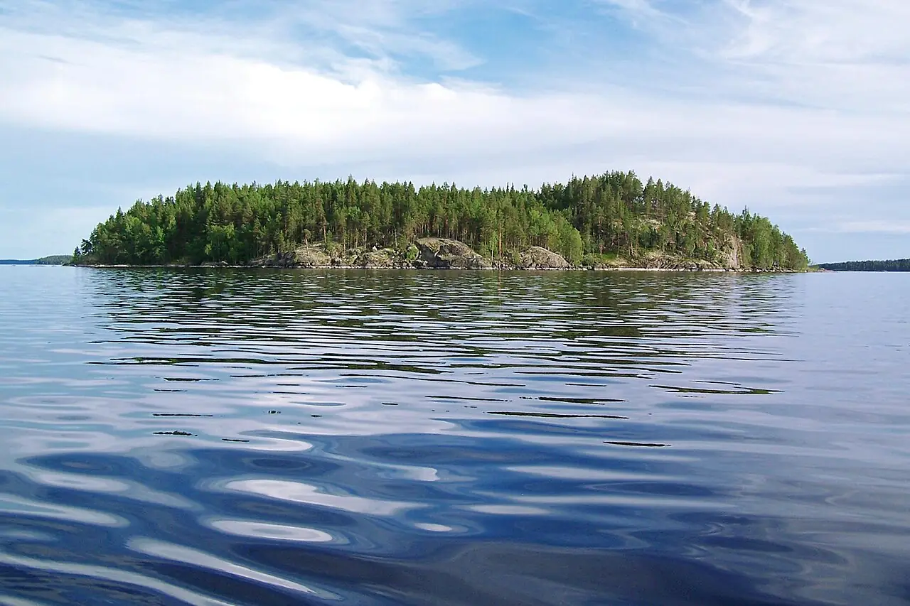

Linnansaari — Saimaa
Savonie du Sud, Finlande · kayak, paddle, baignade

Parc national au cœur du lac Haukivesi, une partie du grand Saimaa, fait d’îles boisées et de criques rocheuses. On y circule en kayak de camp en camp dans l’un des plus beaux paysages de lacs de Finlande.
- Lieu
- Savonie du Sud, Finlande
- Niveau
- Débutant
- Activités
- kayak, paddle, baignade
- Type d'eau
- lake
- Coordonnées
- 62.11, 28.51 (position approximative du secteur)
Dangers à connaître
- Clapot rapide sur les grands bassins ouverts quand le vent se lève.
- Eau froide hors de l’été : combinaison conseillée en kayak.
Le conseil d'Ocean Buddy
Réserve un bateau-taxi ou loue ton kayak à Rantasalmi ou Oravi, et garde tes distances avec les phoques du Saimaa, une espèce très menacée.
Ouvrir dans Ocean Buddy Télécharger sur l'App Store
Source : Fiche Ocean Buddy · septembre 2026 · à vérifier localement.